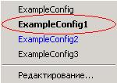
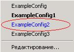

Интерфейс пользователя.
Описание возможных состояний IngaOPC сервера:
После запуска сервера, в трее появляется иконка, которая в зависимости от текущего состояния сервера может принимать следующие виды:
|
загружается конфигурация сервера; |
|
|
конфигурация загружена, нет подключенных клиентов; |
|
|
конфигурация загружена, есть подключенные клиенты; |
|
|
происходит обмен между драйвером пользователя и сервером; |
|
|
ошибка в работе сервера, дальнейшая работа невозможна; |
Описание пунктов меню:
Меню вызывается при нажатии левой или правой кнопки мыши на иконке сервера.
Шаблоны
Вызывается редактор шаблонов.
Вызывается дополнительное меню, в котором перечислены все доступные конфигурации. Файлы конфигураций хранятся в подкаталоге "Configs" сервера.
Конфигурация, помеченная таким образом, является текущей:

Таким образом помечается конфигурация, которую выбрал пользователь, но она еще не загружена:

При выборе пункта меню "Редактирование" будет вызван редактор конфигураций.
Вызывается дополнительное меню, где перечислены все драйверы, доступные серверу. Файлы драйверов (*.Dll) хранятся в подкаталоге "Dll" сервера. При выборе драйвера, будет вызвана функция показа диалогового окна, которое реализовано в драйвере (подробнее см. Описание драйвера). Драйвера, выделенные жирным шрифтом, используются в текущей конфигурации.
Окна отладки
|
Кэш сервера |
- |
Вызывается окно просмотра внутреннего кэша сервера, где отображаются значения и основные свойства тэгов доступные OPC клиентам, а так же значения и свойства, которые будут доступны после отработки скриптов. |
|
OPC клиенты |
- |
Вызывается окно, в котором показываются подключенные OPC клиенты, а так же группы и тэги, которые эти клиенты создали. |
|
Лог драйверов |
- |
В окне будет выводиться информация обмена между драйверами пользователя и сервером. |
|
Системный лог |
- |
В окне будет показан файл системного лога сервера, куда сохраняются сообщения и ошибки при работе сервера. Файл лога "IngaOPC.log" располагается в том же каталоге, где и файл сервера |
Отключить клиентов
При выборе это пункта меню, если есть подключенные клиенты, будет выдан запрос на подтверждение отключения всех OPC клиентов от сервера.
Обновить конфигурацию
При выборе этого пункта, будет загружена конфигурация, выбранная пользователем (см. меню "Конфигурации").